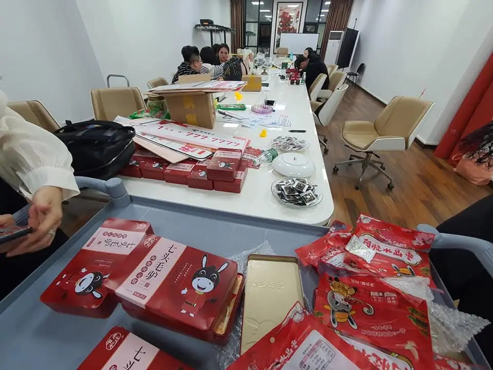
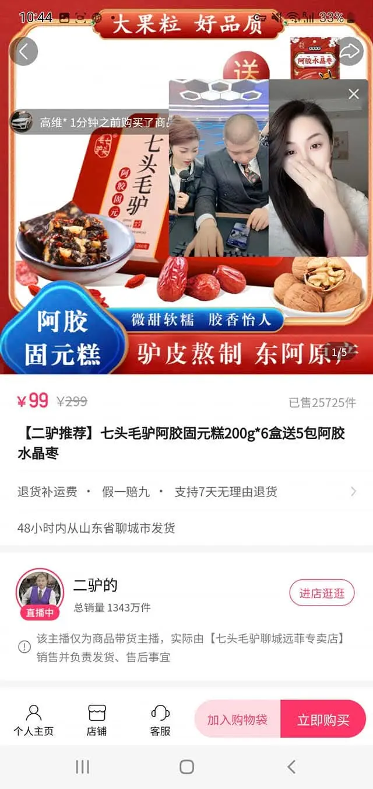
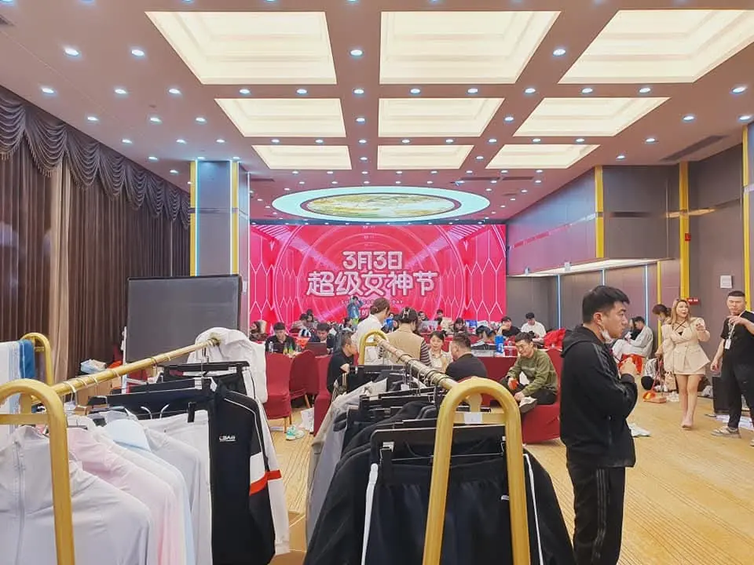
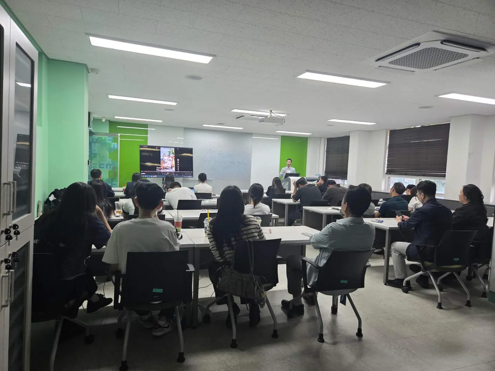

CHINA MARKET ENTRY
중국 시장 진입China Market Entry中国市场进入
제품 준비 상태, 진입 조건, 현지 파트너와 후속 과제 검토Readiness, entry conditions, local partners and next steps产品准备、进入条件、本地伙伴与后续任务
관련 사례Related Case相关案例 ↗BUSINESS CAPABILITIES
제품의 준비 단계에 맞춰 시장 검토, 현지 파트너, 콘텐츠, 판매와 후속 운영을 구성합니다.Market review, local partners, content, sales and follow-through—built around product readiness.依据产品准备情况配置市场评估、本地伙伴、内容、销售与后续运营。

MARKET & COMMERCE
시장 가능성 검토에서 실제 판매 채널과 유통 조건 확인까지.From market feasibility to sales channels and distribution conditions.从市场可行性评估到销售渠道与流通条件确认。
CHINA MARKET ENTRY
제품 준비 상태, 진입 조건, 현지 파트너와 후속 과제 검토Readiness, entry conditions, local partners and next steps产品准备、进入条件、本地伙伴与后续任务
관련 사례Related Case相关案例 ↗COMMERCE & DISTRIBUTION
판매 채널, 유통 파트너, 주문·물류와 운영 조건 검토Sales channels, partners, orders, logistics and operations销售渠道、流通伙伴、订单物流与运营条件
업무 문의Contact业务咨询 ↗CONTENT & LIVE
중국 플랫폼에 맞는 콘텐츠와 라이브커머스를 실제 판매 운영으로 연결합니다.China-platform content and live commerce connected to sales operations.将中国平台内容与直播电商连接至实际销售运营。

CONTENT & INFLUENCER
도우인·샤오홍슈 콘텐츠와 브랜드 협업Douyin, Xiaohongshu and brand collaboration抖音、小红书内容与品牌合作
관련 사례Related Case相关案例 ↗
KOREA–CHINA LIVE COMMERCE
방송 기획, 현지 채널, 주문과 판매 운영 연계Broadcast planning, channels, orders and sales直播策划、本地渠道、订单与销售运营
라이브커머스 보기View Live Commerce查看直播电商 ↗PROGRAM & EDUCATION
K-콘텐츠 현장 행사와 중국 플랫폼 실무 교육을 각각의 목적에 맞춰 운영합니다.K-content events and practical China-platform education.根据项目目标运营K-内容活动与中国平台实务教育。
K-CONTENT & EVENTS
K-POP, 문화 콘텐츠와 브랜드 협업 프로그램K-POP, cultural content and brand programsK-POP、文化内容与品牌合作项目
관련 프로젝트Related Project相关项目 ↗
EDUCATION & CREATOR
대학·교육기관의 도우인·라이브커머스 실무 교육Douyin and live-commerce education for institutions面向高校与机构的抖音及直播电商教育
관련 사례Related Case相关案例 ↗